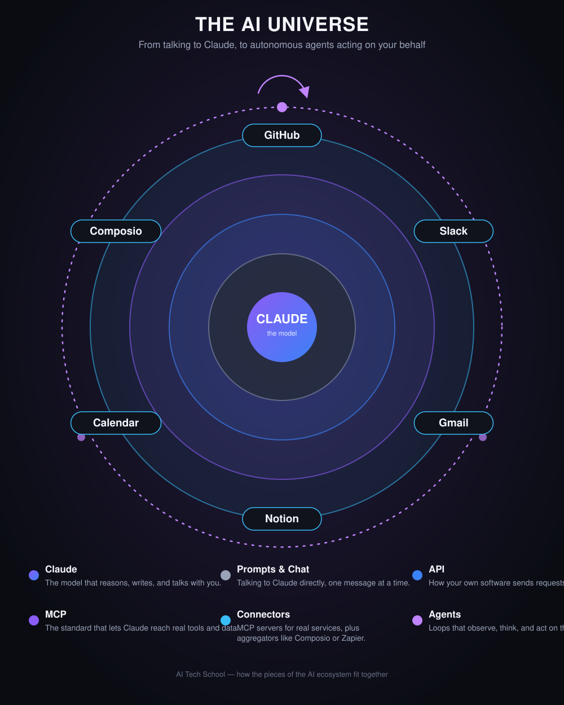

— 2-minute video
The AI Universe, explained
Claude, prompts and chat, the API, MCP, connectors, and agents — how every piece of the ecosystem fits together, in under two minutes.
This video is based directly on the diagram below — every layer it walks through is one ring on this map.
